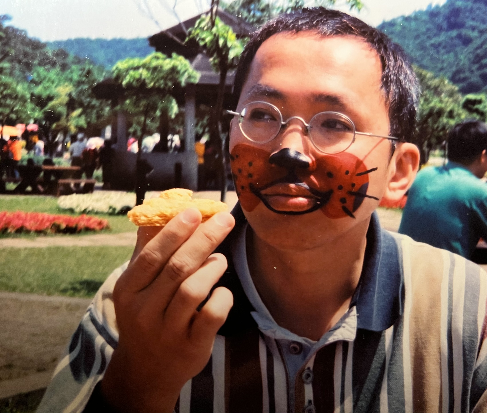

Tsung Ying Wu | WDD 130

My Name Is Tsung Ying, but it can be quite hard for people to remember. So feel free to call me Joseph. I am Chinese and live in Taipei, Taiwan. (R.O.C). Taiwan is a beautiful island which is called Formosa. I enjoy learning new stuff. for example, computer coding, knowing my body, being aware of my mind, and learning how to sing a song. My major at BYU-Idaho is professional study. I take some courses like software and web development. I want to have my own business in the future. Also, I am learning to be a YouTuber. I have a very kind wife. She is a scripture expert. Sometimes, if I did not under the deep meaning of scripture, she could help me a lot. I grew up with my father, mother, two brothers, and one sister. One major thing I would like to learn is how to manage my life and treat people to feel good.